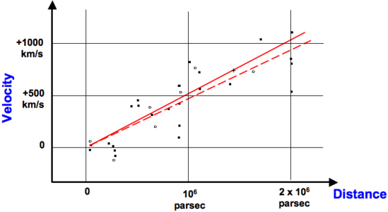

In 1929 Edwin Hubble published his landmark discovery that distant spiral “nebulae” are receding from us at speeds proportional to their distances, implying that the Universe is expanding at a constant rate. Recessional velocities were calculated from the Doppler shift of spectral lines and distances estimated from luminosity measurements. Despite considerable scatter in the results, Hubble concluded that the rate of expansion was constant, with a value of almost 500 km per second per megaparsec. Hubble’s original diagram is reproduced below.
Hubble’s Law can be written as:
V = Ho x D
where V is the radial velocity, D is the distance, and the slope of the line is the Hubble constant, Ho.
More recently, the WMAP mission’s detailed measurements of the cosmic microwave background radiation give the best current estimate of the Hubble constant as 71 +/- 3.5 km s-1 Mpc-1.

From the relationship to = 1/Ho, the age of the Universe (or the Hubble time, to) can be estimated to be 14 billion years, consistent with the most accurate current value of 13.7 +/- 0.2 Gyr determined from the combined measurements of the CMB anisotropy and the accelerating expansion of the Universe.